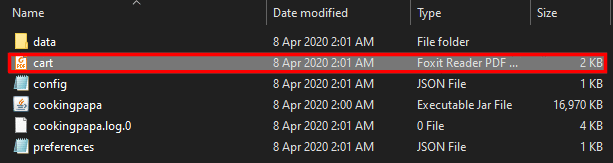

Overview
CookingPapa acts is an application targeted towards university students that want to learn how to cook by themselves. Users will interact with the application with a CLI, integrated with a GUI created with JavaFX. It acts as storage for recipes, keeps track of an inventory of your current ingredients and also has a shopping list to remind users what to buy on their next trip to the supermarket.
Summary of contributions
-
Major enhancement: Cart move to inventory
-
What it does: With one command, the user is able to migrate all the ingredients from the cart to the inventory. From there, the inventory will be updated with the added ingredients and the cart will be empty.
-
Justification: This enhancement will allow the user to skip the need to update their own inventory after their shopping trip. Instead of having to keep track what ingredients they have to add from cart to the inventory and eventually delete everything in the cart, this command will do it all in one line.
-
Highlights: This command will be frequently used, since cart serves as a convenient shopping list for our users. After shopping, it is common to update your inventory of ingredients and this feature can accomplish this need easily.
-
Credits: Ingredient checks and tests are a group effort. The whole team contributed in allowing the
Ingredientclass to be built well, which is a key part of our project.
-
-
Minor enhancement: Adding an ingredient to the cart
-
What it does: Allows the user to add an ingredient with a specified quantity into the cart. If the ingredient name already exists, it adds on to the quantity of the ingredient in the cart (Provided that the unit given in the quantity is the same).
-
Justification: This feature allows the user to add ingredients to the cart so that they can be reminded of what to but at their next trip to the supermarket.
-
Highlights: This enhancement allows users to choose the number of ingredients they would actually need to complete their recipe. For example. if the recipe calls for 3 eggs while the user only has 1 in their inventory, they can simply add 2 more manually into the cart.
-
Credits: Ingredient checks and tests are a group effort. The whole team contributed in allowing the
Ingredientclass to be built well, which is a key part of our project.
-
-
Code contributed: tzihiang’s contribution to CookingPapa on Github
-
Other contributions:
-
Project management:
-
Kept track of deadlines to meet for the team
-
Brainstormed together with team the application, what it does and its main features.
-
-
Enhancements to existing features:
-
Added to several test cases for added features: #215
-
-
Documentation:
-
Community:
-
Reviewed PRs before merging
-
Asked questions and answered questions regarding project with team mates.
-
Contributed to bug reports during PE Dry Run using CATcher.
-
-
Contributions to the User Guide
Given below are sections I contributed to the User Guide. They showcase my ability to write documentation targeting end-users. |
Contributions to the User Guide
Cart Commands (by Tay Zi Hiang Willis)
Cart commands are commands that allow you to easily add ingredients needed for a recipe into a shopping cart. This provides convenience for your grocery shopping needs.
Add ingredients in a recipe to the cart
This command allows you to add all the ingredients in a recipe to the cart.
-
Format:
cart add recipe INDEX -
Example:
| Command | Result |
|---|---|
|
Adds all the ingredients required of recipe 1 to the cart. |
Add ingredients to the cart
This command allows you to add ingredients to the cart.
-
Format:
cart add ingredient i/INGREDIENT q/QUANTITY -
Example:
| Command | Result |
|---|---|
|
Adds 5 eggs to the cart. |
Remove ingredients from the cart
This command allows you to remove ingredients from the cart. You can indicate the quantity you want to remove for an ingredient, which should not be greater that than the ingredient’s quantity. Please ensure that the unit of the quantity matches the ingredient’s unit in the cart.
Note: If you do not indicate any quantity, all entries in the cart that have the specified ingredient name will be removed regardless of the unit.
-
Format:
cart remove ingredient i/INGREDIENT [q/QUANTITY] -
Example:
Command |
Result |
|
Removes all eggs from the cart |
|
Removes 200ml of milk from the cart. (If your cart had 500 ml of milk, it will be subtracted and updated to 300 ml of milk) |
Clear all the items in the cart
This command allows you to clear all the items in the cart. It can be used to discard an unwanted cart, or to clear the cart after completing the purchase.
-
Format:
cart clear -
Example:
| Command | Result |
|---|---|
|
Clears the cart of all items. |
Move all ingredients currently in the cart to inventory
This command allows you to move all the ingredients from the cart into your inventory. This command also empties your cart. This is helpful after the user has finished shopping and wish to conveniently move all the ingredients to the inventory.
-
Format:
cart move -
Example:
| Command | Result |
|---|---|
|
Moves all ingredients from the cart into the inventory. Also clears the cart of all items. |
Export ingredients in cart to PDF file
This command allows you to export all the ingredients in the cart to a PDF file. The PDF file will be located in the same folder as Cooking Papa.
Note: if a previous version of the PDF file, cart.pdf is open in another program (Internet browser, Adobe PDF),
Cooking Papa will not be able to export the cart.
-
Format:
cart export
Command |
Result |
|

The exported PDF file will be in the same folder where Cooking Papa is located. 
An example of the PDF file exported from the sample cart in Cooking Papa. |
Command Summary (by Tay Zi Hiang Willis)
| Category | Addtional Parameters | Result |
|---|---|---|
|
|
Shows recipe at given INDEX. |
|
Adds a new empty recipe with the given NAME and DESCRIPTION. |
|
|
Adds a new recipe with the given NAME and DESCRIPTION. INGREDIENT and its QUANTITY, STEP, and TAG are optional parameters and will be added according to input from user. |
|
|
Remove recipe at given INDEX. |
|
|
Search for recipes by a keyword. |
|
|
Search for recipes by tags. |
|
|
Search for recipes whose ingredients are available in the inventory. |
|
|
Views the whole collection of recipes in the cookbook. |
|
|
|
Add ingredients to a recipe at given INDEX. |
|
Removes the ingredient and the specified quantity from recipe at given INDEX. |
|
|
Adds a step at STEP_INDEX with STEP_DESCRIPTION to the recipe at given INDEX. |
|
|
Remove a step at STEP_INDEX from the recipe at given INDEX. |
|
|
Adds a tag 'TAG' to the recipe at given INDEX. |
|
|
Removes a tag 'TAG' to the recipe at given INDEX. |
|
|
|
Adds QUANTITY of INGREDIENTS into your inventory. |
|
Removes QUANTITY of INGREDIENTS from your inventory. |
|
|
Removes all ingredients from the inventory. |
|
|
Removes the ingredients and its' corresponding quantities of recipe INDEX from the inventory. |
|
|
|
Adds all ingredients required of recipe at given INDEX to the cart. |
|
Adds QUANTITY of INGREDIENTS into your cart. |
|
|
Removes QUANTITY of INGREDIENTS from your cart. |
|
|
Clears the cart of all ingredients. |
|
|
Moves all the ingredients from the cart to the inventory, clearing the cart in the process. |
|
|
Exports current cart into a PDF. |
Contributions to the Developer Guide
Given below are sections I contributed to the Developer Guide. They showcase my ability to write technical documentation and the technical depth of my contributions to the project. |
Adding ingredients to inventory and cart
The inventory and cart acts as storage for Ingredient classes. They are facilitated by InventoryCommand and CartCommand
respectively, which extends the Command abstract class. Since CartAddCommand and InventoryAddCommand both serve the
same purpose in different contexts of Cart and Inventory respectively, they will be mentioned together in tandem.
This command was implemented to allow the user know to add an ingredient to the cart or inventory respectively.
An ingredient only has two main components - its name and quantity. We allow the user to use their own measurement up to their own
preferences and do not force any fixed unit of measurement. Although similar, Cart and Ingredients differ in certain functions
from a user’s point of view. For a user to immediately sort where they wish to sort the ingredient they are adding, Cart and
Implementation
Below is a step-by-step sequence of what happens when the command cart add ingredient i/INGREDIENT_NAME q/INGREDIENT_QUANTITY is added.
-
The user adds a ingredient to the cart by entering the command
cart add ingredient i/INGREDIENT_NAME q/INGREDIENT_QUANTITYin the command line input. -
CartAddCommandParserparsers the input to check and verify that the input provided fori/INGREDIENT_NAMEamdq/INGREDIENT_QUANTITYare correct. Otherwise aParseExceptionwill be thrown. -
The fields are then passed to
CartAddIngredientCommandas anIngredientobject and is returned toLogicManager. -
LogicManagercallsCartAddIngredientCommand#execute()and checks if theIngredientobject given has the sameINGREDIENT_NAMEandINGREDIENT_QUANTITYunit. If thatIngredientexists, it will simply add on to the quantity of that ingredient. Otherwise, a new instance of thatIngredientwill be added to the Cart. -
If
CommandExceptionis not thrown,Model#addCartIngredientwill be executed, with the givenIngredientas the parameter -
Model#addCartIngredientthen executes, adding theIngredientto the local cart storage and updates withModel#updateFilteredCartIngredientList(). -
A
CommandResultwith the successful text message is returned toLogicManagerand will be displayed to the user via the GUI to feedback to the user that theIngredienthas been successfully added.
The above implementation is the same for Inventory with the command inventory add ingredient i/INGREDIENT_NAME q/INGREDIENT_QUANTITY
The following sequence diagram shows how the function of adding ingredients to cart work (full command omitted for brevity):

Design Considerations
Aspect: The need for many parsers for this command
| Design A (Current choice): Create parsers for every individual action | Design B: Create parsers for each specific action | |
|---|---|---|
Description |
The command will go through the parsers in the following order: |
|
Pros |
More organised and can do more with |
The classes can be more specific and atomic in their actions. |
Cons |
Many parser classes to make and keep track of. |
Might lead to disorganisation during troubleshooting with so many classes to keep track. |
Moving ingredients from cart to inventory
The user may use this command after their shopping trip. With this one command, all ingredients will be shifted from the cart to the inventory.
This command is implemented to ease the process of having the user adding every single ingredient to their inventory after they have bought ingredients from their cart and eventually deleting the cart after that tedious process. These gives a convenience to users that frequently use our application and we forsee that such an action will be used very often by these users. As this command only performs an atomic action, no extra arguments are needed to further supplement the use of this command.
Implementation
This command is facilitated by CartMoveCommand, which extends the Command class. The format of the command is as follows:
cart move.
Below is a step by step sequence of what happens when the user executes this command.
-
The user enters the command
cart movein to the command line input. -
CartMoveCommandParserthen ensures that the user does not enter any other commands aftercart clear. -
CartMoveCommandParserthen returns aCartMoveCommandand returns it toLogicManager -
LogicManagercallsCartMoveCommand#execute(). If there are other commands aftercart clear, aCommandExceptionwill be thrown. -
If
CommandExceptionis not thrown,Model#cartMoveIngredients()will be executed. -
Model#cartMoveIngredients()will move every ingredient from thecartand add it into theinventory -
A
CommandResultwith the success message text will be returned toLogicManager, which will then be passed toMainWindowand will then feedback to the user.
The following sequence diagram shows how this function works (full command omitted for brevity):

Design considerations
Aspect: Allowing users to move some or all ingredients from cart to inventory
| Design A (Current choice): Move all ingredients | Design B: Allow users to move individually or exclude some ingredients when moving | |
|---|---|---|
Description |
There was a consideration to allow the user to move the ingredients by individual ingredients. Eventually the options was not given as we know that typical users will want to move all the ingredients except for individual ingredients. |
The use cases of such an action happening is very little and the user can simply manually remove the few
ingredients they do not wish to add to the inventory after using the |
Pros |
Straightforward to implement |
Lesser implementations, more time to focus on other parts of the project |
Cons |
Lesser functionality to users that really want to only move certain ingredients |
Poorer user experience for users that do not want to move all ingredients from the cart to inventory on a regular basis, |